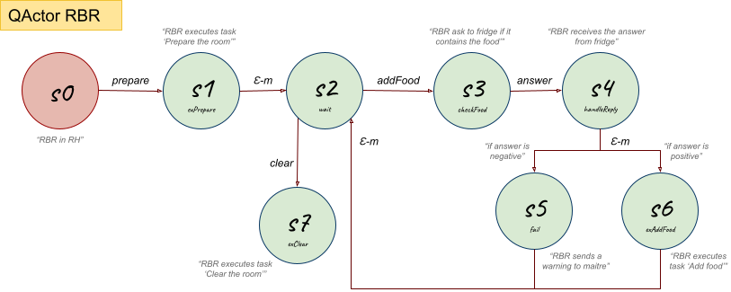

Introduction
Keeping in mind the motto:Requirements
Requirement Analysis
Glossary
By the interaction with the customer, here it's exposed an essential glossary about the meaning of the names and of the verbs included in the requirements text given by the customer.| It's an environment equipped with a set of smart and non-smart resources and in which the interactions between these elements happen. These resources are: a |
|
| Person who manages the |
|
| Smartphone application or a user-GUI in a browser used by |
|
| It's a smart device, having knowledge base on his storage, and an "Internet Thing". It's embedded into the wall of the |
|
| It's a non-smart resource embedded into the wall of the |
|
| It's a non-smart resource embedded into the wall of the |
|
| It's a non-smart resource put in the center of the |
|
| It's a |
|
| The customer provided all the documentation about this topic: the documentation about the basicRobot (at basicrobot2021.html), that can be implemented as a virtual robot (at VirtualRobot2021.html) or as a real robot, that can be an mbot (at MBot2020.html) or a nano robot (at LabNanoRobot.html). | |
| It's the position in the |
|
| it's a task that the |
|
| This |
|
| This |
|
| Univoque code associated to a specific food. | |
| This |
Requirements Analysis
Once we have understood the main concepts set by the requirements text given by the customer, it's now possible to analyze them.The software system is a distribuited system composed by three main entities:
|
|
The software running on
|
|
The software running on
|
|
The software running on
|
A First Set of Functional Test Plans
Scenario
Here, it's illustrated a possible scenario of the system.| Steps in the Scenario | Simplified Representation of Each Step |
|---|---|
|
 |
|
|
|
|
|
 |
At every time of the service:
|
|
Test Plans
It's necessary to make some test plans that must be verified for the correct working of the final system, according to the requirements provided by the customer.Below it's reported a first planning of tests:
- Tests of the position of the
RBR that must be on itsRH when system starts and at the end of eachtask ; - Tests of the states for each element (
fridge ,pantry ,dishwasher ,table ) in theroom in every moment of the service (start, end, endtask , consult command); - Tests of all the communications between entities;
- Tests of the path carried out by the
RBR that must be the one expected to execute thetask required by theMaître de Salle ; - Tests of the mutual exclusion of
tasks and of their order of execution; - Tests of the state of the
RBR to verify that it is stopped after receiving stop command and to verify that it resumestask execution after receiving the reactivate command; - Tests of the stop and reactivate commands that can be used by
Maître de salle only when there is a runningtask ; - Test of the capability of the
RBR to avoid all the possible obstacles.
A First Model of the System Architecture
From the requirements analysis, it's possible to obtain a first model, that is an initial representation of the system architecture, using a meta-model written in a machine-understandable language, like QActor, that describes the main interactions and behaviors between the main system components. In particular, the three main entities (To make this, there were been found some problems, that will be addressed and solved next in the problem analysis:
- the stop and reactivate features;
- the consult feature, that is still not completed cause it's necessary to manage the state of smart and non-smart elements, but in this representation it's handled only the
fridge state; - the
fridge requirement to reply via CoAP torbr ormaitre , that isn't yet implemented but it's handled in this first phase through adispatch message; - the movements of the
RBR , that aren't addressed here but only its interactions withfridge andmaitre ; - the
maître's smartphone , that is described here as a mock client, because it's early, in the requirements analysis, to represent his full proactive behavior that depends from a GUI.
| Machine Understandable Architecture Model | A Possible Graphic Representation |
|---|---|
|
ReqAnalysisModel.qak |

|
| Moore State Machine Diagram | |
  
|
Problem Analysis
Identification of the Problems and the Corresponding Solutions
Starting from the requirements analysis, it's now necessary to found the main problems and abstraction gap involved by the requirements and to solve them, establishing the most appropriate technologies necessary for building the system.- General System
- In the requirements analysis, there were been identified three main entities that run on different nodes, therefore the system is distribuited. To model it, it's available the Qak-infrastructure, provided by the
it.unibo.qakactor-2.4.jar library. This framework provides a built-in message-driven tecnology to support the communications between different actors running on different contexts. In this way, it's possible to design the main components of the system using QActor meta-model. - To support the distribuited communications, it's possible to use the TCP, MQTT and/or CoAP protocols; the last one, by requirements, must be used by the
fridge to communicate with the other two main components. In particular, MQTT is a IoT optimized messagging protocol which allows to implement a publish/subscribe interaction; while CoAP is a protocol for point-to-point communications among different nodes on the same network. CoAP supports also the observe mechanism where the node state is seen as a resource (CoAP) observed by other CoAP clients. - Fridge
- The requirements specify that the
fridge must communicate through CoAP protocol. This can be done updating thefridge state through theupdateResource command provided by the Qak-infrastructure and using a CoAP observer which waits for afridge state update and when this happens, it sends anevent to the listening actors. - Resources
- In the
room there are non-smart resources, whose communications with other system components could be managed: For uniformity in the management of all resources (smart and non-smart), the most indicated solution could be the first one.
- The states of non-smart resources should be managed by the software system. This could be done in different ways, listed below.
Therefore, exposed some possible solutions, the most appropriate seems to be the number 3, because it makes the most of the message communication system and allows to extend the functioning of the actors if the resources they represent, in future, assume a more advanced behavior.
- By requirement, at system start,
fridge andpantry resources are embedded with a proper set of items anddishwasher andtable resources are empty; so it's necessary an initialization procedure which loads the initial state for each resource (smart and non-smart) with its own elements set. To do this, it's possibile to use different approaches.
Therefore, exposed some possible solutions, the most appropriate seems to be the number 3, because it integrates best with the Qak-infrastructure and it is easier to implement and manage. In future, it could be ever integrated the possibility to add in themaître's smartphone software application a configuration tool, so to make possible for theMaître de Salle to insert or change the initial state values for each resource in theroom .
- To manage the update of the state value of each resource, there are two possible solutions:
- to load at the start of each resource actor its initial state value from the prolog file and to save it in a variable, which will represent the resource state value and which will be updated when necessary;
- to load at the start of each resource actor its initial state value from the prolog file and to update it when necessary, through the
solve command provided by the Qak-infrastructure, which executes specific methods in the prolog file.
- Table
- An other problem could be represented from the management of the food consumption on the
table . To do this, it's possibile to use different approaches:- using, for each food state on the
table , a random consumption time, at the end of which the corresponding food will be consumed and therefore will be no longer available on thetable ; - simulating people in the
room , which consume the food on thetable randomly, so as to make it no longer available on thetable . This solution simulates what might actually happen in theroom with regard to the consumption time, but not for thetable state update, which would be delegated to each consumer. Furthermore, this simulation would make the system heavier; - making that the
Maître de Salle indicates when and which foods were consumed, in order to update the state of that food making it no longer available on thetable .
- using, for each food state on the
- RBR
- To allow
rbr to move, the customer provides a libraryit.unibo.qak21.basicrobot-1.0.jar . In particular, this framework provides the basicRobot (basicrobot2021.html) and its possible implementations: virtual robot (VirtualRobot2021.html), on its own WEnv (Web Environment), or real robot, that can be mbot (MBot2020.html) or nano robot (LabNanoRobot.html).
Therefore to move therbr must communicate through messages (dispatch orrequest ) with the actorbasicrobot , which performs the movements. - To execute the
tasks , therbr must be able to reach every element in theroom with which he has to interact (fridge ,dishwasher ,pantry ,table ) and also it must be able to return on itsRH . Therefore, to know where the elements and theRH are situated in theroom , it's available a support,it.unibo.planner20-1.0.jar , which allowsrbr , at its boot, to create a map of theroom or to load an existing one. - To be able to map the
room and to satisfy the requirement avoid the impact with obstacles, it's possible to use data collected from a sensor, which can be represented by a sonar (in both virtual and real robot). In the libraryit.unibo.qak21.basicrobot-1.0.jar , provided by the customer, the sonar is already integrated and used by thebasicrobot . - To manage the the stop/reactivate commands received by the
maitre , during the execution of eachtask , it's possible to split the path, therbr must execute, in a steps sequence. In this way, at the end of each step therbr checks if it has received a stop command and in this case it saves its state and waits for the reactivate command, otherwise it carries out the next step. - During the execution of each
task , therbr must interact with all the resources by taking or bringing elements to or from them. Therefore, the state of these resources must be updated and the most indicated solution is for therbr to do it. - Maitre
- The software running on the
maître's smartphone must provide an user interface to allow the user (Maître de Salle ) to interact with the system. This software may be a native application (Android or IOS) or a web application running on a mobile browser; but, after a careful evaluation of the available means to design this software, it results more appropriate the use of a web application, as it appears to be a more versatile tool. - A problem could be represented by the sending of the prepare command. In fact, before sending this command, it's necessary to specify how much elements the
rbr has to take from the resources (pantry andfridge ) and bring to thetable , being careful that the number of these elements is less or equal then the available number of elements. This can be done in different ways:- using, in the code, prefixed values for the number of elements in prepare command; but it's never a good practice;
- loadind from a prolog file, prefixed values for the number of elements in prepare command;
- making that the
Maître de Salle can decide which and how many elements to insert in the prepare command.
- A similar problem could be represented from addFood command. Here, before sending this command, the
Maître de Salle must specify which element, through itsfood-code , therbr must require to thefridge and, if possible, take and bring it to thetable . As for the prepare command, this can be done loading from a prolog file a prefixedfood-code ; but, then, it could be improved by making possible for theMaître de Salle the choose of this element from a set offood-codes .
- To make able the
Maître de Salle to choose the elements for prepare and addFood commands, it could be useful to run a consult command tofridge andpantry at the start of the system automatically, so as to have a set of the updated resources state values, which limit the choose, byMaître de Salle , of the elements (that must be less or equal then the available number of elements).
- With regard of the clear command related to the
Clear the room task, therbr has to know which and how much elements it has to take from thetable and bring to thedishwasher and to thefridge . Similarly to the prepare and addFood command, to do this, it could be useful to run a consult command to thetable . This can be done automatically by themaitre before sending the clear command to therbr or by therbr before executing theClear the room task.


Model of System's Logical Architecture
Below it's shown a model, that is a representation of the system architecture obtained from the problem analysis using QActor meta-model. In particular, starting from the model obtained from the requirements analysis, in this model there are represented the main entities of the system as actors (At each resource (smart and non-smart) it's associated a CoAP observer.
The initial state of each resource and the methods to update it are managed through prolog files (FridgeState.pl, PantryState.pl, DishwasherState.pl, TableState.pl).
The elements and the
Furthermore, the clear command is managed,
| Machine Understandable Architecture Model | A Possible Graphic Representation |
|---|---|
|
ProblemAnalysisModel.qak |
 
|
Test Plans
Below it's reported a functional tests planning starting from the requirements analysis test plans:- Tests of the position of the
RBR that must be on itsRH when system starts and at the end of eachtask ; - Tests of all the communications between entities;
- Tests of all the communications via CoAP;
- Tests of the states for each element (
fridge ,pantry ,dishwasher ,table ) in theroom in every moment of the service (start, end, endtask , consult command); - Tests of the path carried out by the
RBR that must be the one expected to execute thetask required by theMaître de Salle ; - Tests of the mutual exclusion of
tasks and of their order of execution; - Tests of the state of the
RBR to verify that it is stopped after receiving stop command and to verify that it resumestask execution after receiving the reactivate command; - Tests of the stop and reactivate commands that can be used by
Maître de salle only when there is a runningtask ; - Test of the capability of the
RBR to avoid all the possible obstacles.
Tests
Below there are exposed some tests made for the model achieved from the problem analysis:- PantryTest.kt
- Tests about removing of dishes from the
pantry , useful forPrepare the room task :- RemoveDishPantryTest: after a remove operation, changing the
pantry state via CoAP, it's verified that the operation was successful; - RemoveDishPantryFailTest: after a remove operation of a not existing element, changing the
pantry state via CoAP, it's verified that the operation fails; - RemoveDishPantryFailQuantityTest: after a remove operation of an existing element but not available for the required quantity, changing the
pantry state via CoAP, it's verified that the operation fails.
- RemoveDishPantryTest: after a remove operation, changing the
- DishwasherTest.kt
- Tests about adding of dishes to the
dishwasher , useful forClear the room task :- AddDishdishwasherTest: after an add operation, changing the
dishwasher state via CoAP, it's verified that the operation was successful.
- AddDishdishwasherTest: after an add operation, changing the
- FridgeTest.kt
- Tests about removing and adding of foods from and to the
fridge , useful forPrepare the room ,Add food andClear the room tasks :- RemoveFoodFridgeTest: after a remove operation, changing the
fridge state via CoAP, it's verified that the operation was successful; - RemoveFoodFridgeFailTest: after a remove operation of a not existing element, changing the
fridge state via CoAP, it's verified that the operation fails; - RemoveFoodFridgeFailQuantityTest: after a remove operation of an existing element but not available for the required quantity, changing the
fridge state via CoAP, it's verified that the operation fails; - AddFoodFridgeTest: after an add operation, changing the
fridge state via CoAP, it's verified that the operation was successful.
- RemoveFoodFridgeTest: after a remove operation, changing the
- TableTest.kt
- Tests about removing and adding of dishes and foods from and to the
table , useful forPrepare the room ,Add food andClear the room tasks :- AddRemoveDishTableTest: after an add and then a remove operation of dishes element, changing the
table state via CoAP, it's verified that the remove operation was successful; - RemoveDishTableFailTest: after a remove operation of a not existing dishes element, changing the
table state via CoAP, it's verified that the operation fails; - RemoveDishTableFailQuantityTest: after a remove operation of an existing dishes element but not available for the required quantity, changing the
table state via CoAP, it's verified that the operation fails; - AddFoodTableTest: after an add operation of a food element, changing the
table state via CoAP, it's verified that the operation was successful; - RemoveFoodTableTest: after a remove operation of a food element, changing the
table state via CoAP, it's verified that the operation was successful; - RemoveFoodTableFailTest: after a remove operation of a not existing food element, changing the
table state via CoAP, it's verified that the operation fails; - RemoveFoodTableFailQuantityTest: after a remove operation of an existing food element but not available for the required quantity, changing the
table state via CoAP, it's verified that the operation fails.
- AddRemoveDishTableTest: after an add and then a remove operation of dishes element, changing the
These tests are executed on a single context (
SCRUM Context
Product Backlog
A first Product Backlog could have these elements:- Resources representation
- Resources state
- CoAP integration
- Consult
Prepare the room task Add Food task Clear the room task - Planning
- Integration of
basicrobot with therbr - Sonar
- Mapping
- Stop/Reactivate
- GUI
maître's smartphone software - Deployment
- Maintenance
First SPRINT Sequence
- SPRINT 0
- The problem analysis already solves some problems; so the resulting model could represent the result of a first SPRINT. In particular, the elements DONE of this SPRINT are:
- Resources representation: an actor for each non-smart resource
- Resources state: a prolog file for each resource actor
- CoAP observer: for CoAP communications from resources actors (smart and non-smart) to listening actors
- Consult: communications between actors and get methods in prolog files of resources state
Prepare the room task : communications between actors and add and remove methods in prolog files of resources stateAdd Food task : communications between actors and check for specific food and add and remove methods in prolog files of resources stateClear the room task : communications between actors and add and remove methods in prolog files of resources state- Tests
A possibile set of next SPRINT could be:
- SPRINT 1
Table state: consumption of food- Planning: insert an initial map representation and use of Planner
- Integration of
basicrobot with therbr Prepare the room task : path execution by the virtual robotAdd Food task : path execution by the virtual robotClear the room task : path execution by the virtual robot- Tests
- SPRINT 2
- Sonar
- Mapping
- Avoid the impact with obstacles requirement
Prepare the room task : path execution by the virtual robot avoiding the obstaclesAdd Food task : path execution by the virtual robot avoiding the obstaclesClear the room task : path execution by the virtual robot avoiding the obstacles- Tests
- SPRINT 3
- Stop/Reactivate
Prepare the room task : path execution by the virtual robot receiving stop and then reactivate commandsAdd Food task : path execution by the virtual robot receiving stop and then reactivate commandsClear the room task : path execution by the virtual robot receiving stop and then reactivate commands- Tests
- SPRINT 4
- GUI
maître's smartphone software - Tests
- GUI
- SPRINT 5
- Deploy on Raspberry
Prepare the room task : execution by the real robotAdd Food task : execution by the real robotClear the room task : execution by the real robot- Tests
Project
SPRINT 1
The project part related to this Sprint is available here and it's documented in SPRINT_1.html.Goal
The Goal for this Sprint are:- Consumption of food on the
table - Planning: using the Planner loading an initial map representation
- Integration of
basicrobot with therbr Prepare the room task : path execution by the virtual robotAdd Food task : path execution by the virtual robotClear the room task : path execution by the virtual robot
Result
The resulting model of system's logical architecture for this Sprint is:| Machine Understandable Architecture Model | A Possible Graphic Representation |
|---|---|
|
Sprint_1.qak |
 
|
SPRINT 2
The project part related to this Sprint is available here and it's documented in SPRINT_2.html.Goal
The Goal for this Sprint are:Result
The resulting model of system's logical architecture for this Sprint is:| Machine Understandable Architecture Model | A Possible Graphic Representation |
|---|---|
|
Sprint_2.qak |
 
|